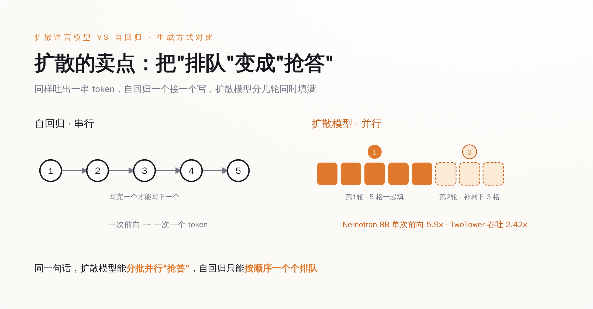
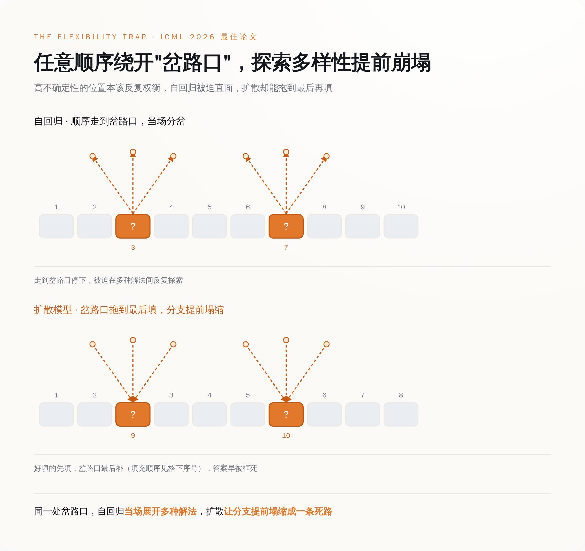
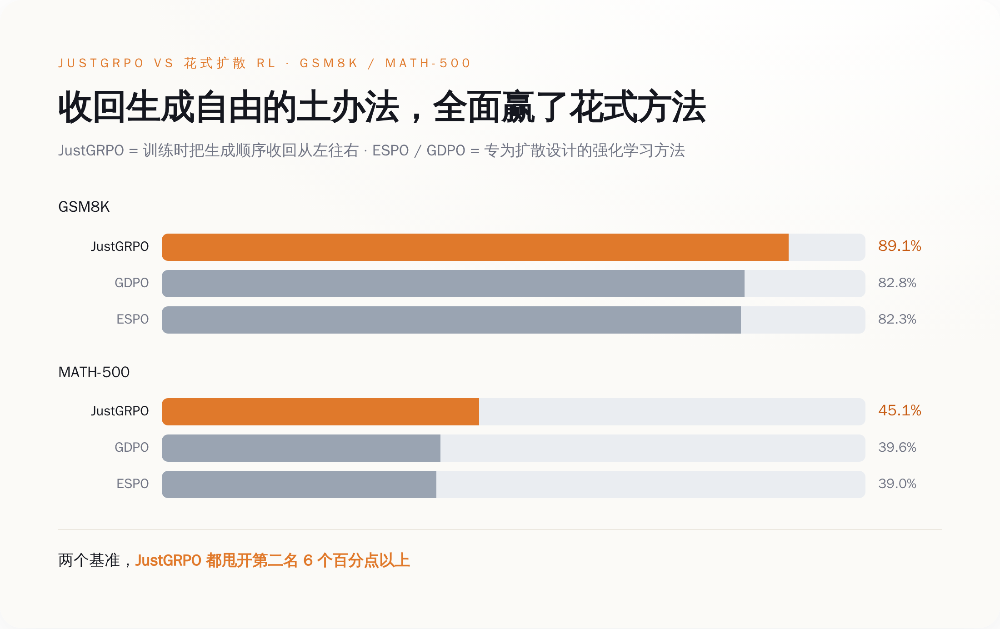

导语
2026 年 7 月第一周，AI 圈有两条新闻，撞在了一起。
7 月 1 号，英伟达甩出一个叫 Nemotron-Labs-TwoTower 的模型，开源、免费下载，卖点是速度：同样的活，它比老实巴交、一个字一个字往外蹦的传统模型快 2.42 倍，质量还能保住 98.7%。宣传口径很燃——扩散模型，捅破了自回归的速度天花板。
7 月 5 号，机器学习顶会 ICML 公布年度最佳论文。其中一篇的标题，翻译过来叫《灵活性陷阱》。它研究的，正是英伟达那类"更快的"扩散模型。结论一句话：让大模型"想先写哪个字就先写哪个字"的那份自由，恰好是它不会推理的原因。
一边在卖自由，一边把年度最高荣誉，颁给了"自由是个坑"。
而《灵活性陷阱》给出的解药更是黑色幽默——想让这个自由的模型学会思考，你得在训练的时候，把它按回去，老老实实，从左往右，一个字一个字地写。
一、先搞清楚，扩散模型到底在卖什么"自由"
要看懂这出戏，先得知道大模型平时是怎么写字的。
你现在用的 ChatGPT、Claude、豆包，底层都是"自回归"。名字唬人，干的事很朴素：从左往右，一个词接一个词往外蹦。写下一个字之前，它必须先看到前面所有的字。像打字，像说话，像你现在读这句话——顺序的，不能跳。
这套办法的毛病是慢。一句话一百个词，它就得算一百回，一回吐一个，谁也插不了队。
于是有人想：凭什么非得从左往右？能不能像填一张答题卡，所有空一起填，先填有把握的，再填没把握的，几轮就填完？这就是"扩散语言模型"（diffusion LLM）的思路——它不按顺序，它任意顺序，它并行。好处肉眼可见：快。
英伟达这次的两个模型，就是来秀这个"快"的。它家 Nemotron-Labs-Diffusion 的 8B 版本，同样算一轮，吐出来的 token（token 就是模型的字，大致半个词一个）是同级传统模型 Qwen3-8B 的 5.9 倍，准确率还更高。另一个 TwoTower，前面说了，2.42 倍速度、98.7% 质量。两个全部开源，谁都能下载。
所以你看，整个叙事特别顺：自回归太慢，扩散模型不按顺序、能并行，更快，这是未来。"不按顺序"这四个字，是卖点，是自由，是它区别于老古董自回归的全部骄傲。
《灵活性陷阱》这篇论文，专门来捅这四个字。

二、任意顺序，是给"逃避思考"开的一条近路
《灵活性陷阱》来自清华的 LeapLab 团队，一作倪赞林（Zanlin Ni），通讯作者黄高，还有几位作者来自阿里。这篇年初挂上 arXiv、一路修订到 6 月、7 月拿下 ICML 最佳论文的文章，论证了一件反直觉的事：扩散模型引以为傲的"任意顺序"，在需要推理的任务上，是个陷阱。
要讲明白这个陷阱，得先说什么叫"岔路口"。
一道数学题，解法是一连串步骤。但这串步骤里，不是每一步都同样重要。大部分是水到渠成的推导，闭着眼都对；真正决定成败的，是几个关键的"岔路口"——在这里，你得选走哪条路，选对了通向答案，选错了满盘皆输。论文管这种词叫高不确定性的 token，掰开说就是：分叉点。
自回归模型从左往右写，躲不开这些岔路口。轮到它了，它就得在那个位置上，硬着头皮做选择。而选择，恰恰意味着它得去试不同的路——这一试，正是推理和探索真正发生的地方。
扩散模型不一样。它有自由，想先填哪个填哪个。于是论文发现，它会怎么干呢？它专挑那些有把握的、确定的、简单的词先填上，把那几个真正难的岔路口，能绕就绕，能拖就拖，拖到最后周围全填满了、答案几乎被框死了，再回来把岔路口一填。它没有在岔路口思考，它是等答案自己浮现，再假装自己选对了。
这在训练时是致命的。大模型现在靠强化学习提升推理，靠的就是不停试不同的解法、留下对的那条。可扩散模型一有自由就抄近路、绕开岔路口，它试来试去都是同一条最省事的路，论文的说法是"解的多样性崩塌"。探索没了，强化学习就成了原地打转。
任意顺序不是自由，是给逃避思考开的一条近路。
三、解药是把自由收走：名字都懒得起，就叫 JustGRPO
发现了病，论文开了个药方，叫 JustGRPO。
这名字本身就是态度。GRPO 是现在训大模型推理最常用的强化学习方法之一，前面加个 Just——"就用普通的 GRPO，别整那些花的"。
它到底做了什么？一句话：在强化学习探索的那个阶段，强制扩散模型别乱来，给我按标准的、从左往右的自回归顺序走一遍。等把推理能力练扎实了，到了真正干活的时候，再把自由还给它——并行填空的本事一样不少，该多快还多快。说白了，就是训练的时候当自回归，用的时候当扩散。
你品品这个逻辑：一个号称"摆脱了从左往右"的新范式，想让它学会思考，办法竟然是，在最关键的学习阶段，把它按回从左往右。
效果呢？论文给的数字很硬。JustGRPO 在小学数学题基准 GSM8K 上做到 89.1%，在更难的 MATH-500 上 45.1%。而那些专门为扩散模型设计的、花里胡哨的强化学习方法，ESPO 是 82.3% 和 39.0%，GDPO 是 82.8% 和 39.6%。一个"别整花的"的土办法，把一堆精心设计的花办法，全按在地上摩擦。
